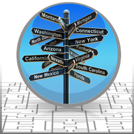

Information Sharing Environment
2013 Annual Report to the Congress
NATIONAL SECURITY THROUGH RESPONSIBLE INFORMATION SHARING
NATIONAL SECURITY THROUGH RESPONSIBLE INFORMATION SHARING
This section addresses the progress of ongoing efforts and new initiatives in the areas of information discovery and access. As defined in the 2012 National Strategy for Information Sharing and Safeguarding (National Strategy), discovery and access are two distinct concepts, in which discovery is the user's ability to identify the existence of information, and access is the user's ability to retrieve it.
The efforts of ISE mission partners and PM-ISE on fundamental elements of discovery and access are examined, to include data-level tagging; data aggregation; development and incorporation of interoperable, industry-accepted technical standards for information sharing solutions; and standards-based acquisition. Those activities that are identified as priorities in the National Strategy are noted in the following pages.
The following list of findings highlights accomplishments and opportunities for improvement. Further detail is provided in the following pages.
Department of Homeland Security (DHS) launched the Enhanced Overstay Vetting and Biographic Exit Project, which seeks to increase DHS's capability of identifying immigration violators and prioritizing them for enforcement;
The Federal Bureau of Investigation (FBI) Criminal Justice Information Services (CJIS) Division expanded the capabilities of the Law Enforcement National Data Exchange (N-DEx) to accommodate more records and users, and to share investigative reports in near real time with criminal justice partners;
The Department of Defense (DoD) is adopting National Information Exchange Model (NIEM) as the best option for standards-based data exchanges;
The PM-ISE initiated and resourced an integrated project with DHS and the Open Geospatial Consortium (OGC) to use NIEM in enabling geospatial data to be discoverable, retrievable, and usable across the ISE by any standards-conformant map viewer;
The Object Management Group (OMG) officially approved the NIEM-Unified Modeling Language (NIEM-UML) profile as an OMG specification, opening the door for organizations to use NIEM-UML to simplify modeling in their architecture frameworks;
The IJIS Institute "Springboard Team" conducted its first standards conformance test to determine whether a commercial data exchange met required interoperability standards; and
The PM-ISE is supporting a pilot project on an open-source implementation of the NIEM-UML Profile which will accelerate innovation and further streamline the development of NIEM-based functional standards.
In the previous reporting period, 65% of agencies reported little or no progress in working towards metadata tagging solutions. Since June 2012, ISE agency initiatives designed to address this include the use of DoD Architecture Framework (DoDAF) artifacts to enable cross-domain sharing by both the DoD Joint Information Environment and the Intelligence Community Information Technology Enterprise (IC ITE), and the work of DHS and DOT to develop data-tagging implementation plans for discovery and access control on their networks.
Last year's report found that centralized data correlation and data storage introduces privacy and security challenges that limit mission effectiveness; that finding is still valid. To address this, the National Strategy is prioritizing the development of a data aggregation reference architecture; the adoption of metadata standards to facilitate discovery, access, and monitoring across networks and security domains; and the definition and implementation of common standards to support automated discovery and access decisions. ISE activities that address these objectives are detailed in this section of the Report and in Section 3.
Agency responses to the 2013 ISE Performance Assessment Questionnaire (PAQ) show that about 50% of ISE agencies consider ISE functional and technical standards when issuing grants or RFPs for ISE-related systems. While implementation guidance actions were issued for updating grant and acquisition language to support the use of common standards, 43% of agencies have not provided best-practice recommendations to support this initiative. PM-ISE is working with General Services Administration (GSA) to leverage National Strategy implementation actions to accelerate the use of information sharing standards in acquisition language, and to foster reuse of these standards across the ISE mission partners. Health and Human Services (HHS), as co-chair of the Council on Financial Assistance Reform, will work with the Office of Management and Budget (OMB) to develop standard guidance for the grants and financial assistance community.
As noted in previous reports, the ISA IPC Information Integration Sub-Committee (IISC) Standards Working Group (SWG) facilitates standards development and reuse by using a whole-of-government approach that fosters interoperable information exchanges between the Federal Government, state, local, tribal, and territorial (SLTT) government agencies, private-sector partners, and foreign partners and allies.[xlii] By adopting common technical standards and forming consensus on common frameworks, ISE partners can make informed investment decisions by using shared resources, harmonizing policy, rationalizing business processes, integrating standards activities, and deploying technology to realize joint objectives and requirements. The Standards Coordinating Council (SCC)[36] supports the ISA IPC Standards Working Group (SWG) in these efforts by representing the private sector's perspective in addressing the challenges of coordinating and influencing information sharing standards and initiatives.
SCC partners, OMG, and the IJIS Institute hosted the second annual Workshop on Information Sharing & Safeguarding Standards (WIS3) in March 2013. WIS3 brought together government, standards development organizations, and industry partners to exchange ideas about the present and future of information sharing. The challenges and solutions addressed include:
Common Information Exchange Models, and the role that these models play in enabling information interoperability, including how adoption of standards like NIEM can help overcome the challenges of standards certification and common frameworks;
Frameworks and Shared Services, and how service-oriented architecture (SOA), reference architecture patterning, and cloud computing enable information sharing;
Designing Privacy Protection into Policy to ensure that privacy policies accompany data during exchanges and aggregation, and to make privacy protections machine readable and standardized; and
Cybersecurity Information Sharing efforts to develop an information sharing framework for cybersecurity events.
The National Strategy states that departments and agencies have an obligation to make information available to any agency, department, or partner with a relevant national security mission, and to manage that information in a manner that is lawful while ensuring the protection of privacy, civil rights, and civil liberties. To do this across the ISE, agencies must define and adopt common standards to support automated policy-based discovery and access decisions.[37]
The ISA IPC SWG coordinates and oversees the government-wide adoption of these common standards for the ISE. Most importantly, the work done within ISE agencies and communities to identify, develop, and implement common standards ensures that mission-dependent information sharing capabilities are interoperable from the outset. Examples of agency standards governance bodies include:
The FBI's Advisory Policy Board (APB) and Technology Development and Deployment Board (TDDB) serve as authoritative bodies for standards development and ISE Technical Standards adoption, respectively;
The DoD CIO Executive Board oversees the DoD Standards Program, which develops and adopts standards for the Department;
The National Geospatial-Intelligence Agency's (NGA) Geospatial Intelligence Standards Working Group (GWG) is a National System for Geospatial-Intelligence (NSG) community forum for geospatial standards;
The Bureau of Justice Assistance's Global Standards Council; and
The NIEM Executive Steering Council, on which DHS, Department of Justice (DOJ), and the HHS are represented.
These agency standards-governance bodies, and others like them, inform and are informed by the government-wide standards implementation initiatives overseen by the ISA IPC. Currently, 93% of agencies that responded to the 2013 ISE PAQ report incorporating ISE Technical Standards into their enterprise architectures and IT capabilities.[xliii]
NIEM provides a common vocabulary and supports enterprise-wide information exchange standards and processes that enable agencies throughout the nation to effectively share critical information in emergency situations, as well as to support day-to-day operations. Today, all 50 states and 20 federal agencies are committed to using NIEM in some capacity, and at some level of maturity. The value of NIEM is demonstrated every day across the country as it facilitates information exchanges to improve public safety, as well as health, human, and social services, and to strengthen homeland security.
Work on the newest version of NIEM—NIEM 3.0—began in August 2012. Driven by requirements to support information exchange between an ever expanding number of domains, including Biometrics; Chemical, Biological, Radioactive, and Nuclear (CBRN); Children, Youth, and Family Services (CYFS); Justice; Maritime; and Immigration and Screening, development activities are being reviewed by these communities with a planned release date scheduled for the fall of 2013.
The NIEM Unified Modeling Language (NIEM-UML) is a developing industry standard designed to help organizations implement information exchanges across systems, agencies, and levels of government by giving them a visual understanding of what it means to be NIEM-conformant. UML allows organizations to use a blueprint-like model to adopt and incorporate NIEM-based information exchanges—making NIEM implementation less technically demanding.[xliv]
In September 2012, the OMG, whose members include hundreds of organizations, including virtually every large organization in the technology industry, officially approved the NIEM-UML profile as an OMG specification.[xlv] This opens the door for organizations like the DoD to use NIEM-UML to simplify modeling in their architecture frameworks. Audiences with varying degrees of familiarity with NIEM technical concepts can also create variations of existing NIEM exchange packages that interoperate with other NIEM models.
In addition, the PM-ISE is supporting a pilot project on the development of an open-source implementation of the NIEM-UML Profile, which will impact the development of NIEM-based functional standards, leading to interoperability between ISE agencies and mission partners.[xlvi] The two principal deliverables will be an open- source codebase that will enable tool developers to implement the NIEM-UML profile, and a tool that will enable users to automatically produce NIEM-conformant specifications using UML. These tools offer users a pre-harmonized vocabulary that is supported by the community and will ensure that all users derive the same meaning from data elements, a critical factor in achieving interoperability.
In March 2013, the DoD CIO announced that in compliance with White House guidance on the adoption of reference information exchanges, DoD will adopt NIEM for standards-based data exchanges, and will work with the NIEM Program Management Office to create a Military Operations (MilOps) Domain as part of NIEM.[xlvii]
The Office of the DoD CIO will lead the development of a DoD Data Framework, which will provide guidance on governance, and technical direction for NIEM adoption. The DoD Data Framework will build upon the existing DoD data strategy, and will provide principles, rules, and additional guidance for managing data in a way that enables information sharing.
The DoD transition to NIEM will incorporate the ongoing efforts of DoD Universal Core (UCore) and Command, and Control (C2) Core. The DoD CIO will no longer support the development of further enhancements to UCore and C2 Core as unique DoD data exchange models, but the applicable data components in UCore and C2 Core will form the initial content in the NIEM Core and the NIEM MilOps domains, respectively.
The NIEM Biometrics domain was formally established in July 2012 to support biometric-related services and mission-based activities, such as homeland security, national defense, border management, immigration benefits, and global law enforcement, through the joint development and alignment of Biometric Standards. Built upon the early foundations of the DOJ Law Enforcement Information Sharing Program (LEISP), and operating under the stewardship of the DHS Office of Biometric Identity Management (OBIM), the Biometrics domain will support information sharing; establish data-exchange standards; and promote interoperability between federal agencies, SLTT government agencies, private-sector partners, and foreign partners and allies, utilizing biometric data and information. With the establishment of the Biometrics domain, members of the biometric community of interest will have the tools and a formally governed, common forum to ensure that biometric data is discoverable and retrievable by ISE mission partners.[xlviii]
DHS has sponsored a NIEM cyber-incident information sharing prototype to understand what data, tools, and techniques are necessary to enable cyber-incident information sharing across the Federal Government, SLTT government agencies, private-sector partners, and foreign partners and allies. The first phase of the prototype, conducted from May to August 2012, exchanged cyber-incident data based on a NIEM message header, the MITRE Corporation's Structured Threat Information eXpression (STIX)™ schema, and used a central repository hosted at Johns Hopkins University Applied Physics Lab. This phase of the prototype demonstrated how a centralized, trusted broker can facilitate a cyber-incident information exchange between multiple sites.
The second phase, conducted from September 2012 to March 2013, focused on controlling data access by using Personal Identity Verification (PIV) attributes and a Backend Attribute Exchange (BAE) across the enterprise for authentication.[xlix] Data owners used a NIEM-based common data-tagging tool to tag data fields and to document the classification of the cyber incident. Data consumers, using a browser application, could search for and, based on their PIV credentials, access shared cyber incidents. The second phase demonstrated how data owners can control access to cyber incident information that is in distributed databases across the ISE.
In the fall of 2012, the PM-ISE and the DoD initiated a pilot project using NIEM-UML-based tools to develop a NIEM Information Exchange Package Documentation (IEPD) for the DoD and the Department of Veterans Affairs (VA) to share electronic records of candidates undergoing the recruitment process for military service. The pilot involves secure collaboration between the U.S. Military Entrance Processing Command, the Office of the Deputy Chief Management Officer, and the Office of the Under Secretary of Defense for Personnel and Readiness. The pilot is nearing completion, and the lessons learned will be used as the foundation for future NIEM-based data exchange between DoD and the VA.
NGA, in its role as the geospatial intelligence functional manager,[38] is leading the Country Codes Working Group, a Federal Government forum that is coordinating the transition from the use of the two-character country codes defined in the Federal Information Processing Standard (FIPS) 10-4 to the three-character Geopolitical Entities, International Standards Organization (ISO) 3166. The transition to the new standard will impact all federal systems and standards that contain or include country identifiers. Most, if not all, ISE systems will be impacted by the transition. This new standard is crucial for enabling simplified discovery and retrieval of geographically-coded information by analysts and investigators across multiple databases.[l]
In order to be usable across all ISE communities, geospatial data must be standards-based, interoperable, and usable by any geospatial map viewer. The DHS Geospatial Concept of Operations identifies OGC and the use of NIEM as best practices for geospatial information sharing, and the National Level Exercise (NLE) 2012[39] validated the importance of standards-based interoperability for geospatial data—the general conclusion being that "mapable" data should be discoverable, retrievable, and usable by any authorized user, using any standards-conformant map viewer.
In an effort to make data "mapable," the PM-ISE initiated and resourced an integrated project with the DHS NIEM Program Management Office (NIEM PMO), the DHS Office of Science and Technology, and the OGC, to enhance the NIEM architecture for the geospatial domain by developing, testing, and documenting embedded Geospatial Markup Language (GML) architecture reference guidance.
The OGC Interoperability Program initiative[40] objectives, referred to as Geo4NIEM, include developing NIEM-compliant geospatial standards and naming conventions; testing and demonstrating these standards and conventions with ISE community partners; and developing recommendations for the inclusion of a Geospatial Domain within NIEM. This initiative is designed to foster broader community adoption of NIEM across the geospatial community.
The success of the ISE requires the consistent use of interoperable standards in the products and services that ISE organizations acquire. Effective information sharing requires employing the decentralized, distributed, and coordinated approach outlined in IRTPA. New technology is driving changes in infrastructure operations, including cloud, mobile, and SOA solutions.
Agencies are focusing on controlling costs, avoiding duplication, and sharing services. However, there is still little consistency when referencing or enforcing the use of information sharing frameworks, standards, and guidance in RFPs, grants, or other acquisition vehicles.
As a result, the PM-ISE is working with the ISA IPC's SWG and SCC to reevaluate the baseline set of technical standards needed for information exchange. This effort will help create a common set of technical standards that should be incorporated into all ISE partners' enterprise architectures.[li]
There is general movement across the ISE to employ standards requirements for contracts, indicating movement toward an information sharing culture. More than 60 standards development organizations were identified, 9 of which are responsible for more than 20 standards each.
There is a wide variation in the depth and breadth of standards identified. Agencies need to refresh their standards profiles/roadmaps, as many obsolete standards are still mandated.
Other barriers to standards implementation include the Federal Government's annual budget-planning cycle, the time it takes to ratify a standard (often upwards of two years), the rapidity of technology change, and the ability for a standard to be defined quickly enough.
Findings from the analysis will be incorporated into the ISE Common Information Sharing Standards Manual updates.
In addition, last year's report included the PM-ISE and GSA sponsored initiative, through the American Council for Technology - Industry Advisory Council (ACT-IAC), to provide an industry perspective on standards-based acquisition. That initiative resulted in an ACT-IAC White Paper, "Responsible Information Sharing: Engaging Industry to Improve Standards-Based Acquisition & Interoperability," which identified the following findings on the use of ISE Interoperability standards:
Focus on streamlining governance for interoperability standards. A repeatable standards-governance process is necessary to define interoperability requirements and coordinate standards development activities across mission areas and governmental jurisdictions.
Develop a standards roadmap. In order to encourage adoption of interoperability standards, the government needs to clearly describe its target vision for how interoperability will be achieved and the standards that will enable it.
Leverage standards conformance testing and pilots to minimize risk. Reusing standards that have been developed collectively, tested for standards conformance, or piloted within a certain mission area or IT platform will minimize risk.
Incorporate standards requirements into all strategic management processes. Beginning with strategic planning, government's interoperability standards requirements need to be clearly defined and the potential return on investment from using standards needs to be captured.
Enhance training and outreach. Enhancing training and improving outreach with industry and other stakeholder groups will garner greater dividends and help ensure results.
This joint effort with GSA was further refined with the release of the National Strategy, which details the need to "leverage collective demand through acquisition," as one of 16 priority objectives. Working with GSA, PM-ISE intends to use the analysis of agency-specific use of technical standards, the ACT-IAC White Paper, and the results from pilot programs to accelerate the use of information sharing standards in acquisition and grant language, and to foster reuse of standards. The recommendations from these efforts will be captured in a final report to be presented to policy makers.
PM-ISE is also participating in the Integrated Justice Information Systems (IJIS) Institute's Task Force on Procurement Innovation—an effort between government, industry, and academia that will look at the challenges facing state and local police procurements. The purpose of the Task Force is to define the scope and priority of procurement issues relevant to improving the entire procurement process. It will take a national perspective, to include federal, state, local, tribal, and territorial programs, in order to define the context of "national" guidelines.
This Task Force will:
Prepare a comprehensive catalogue of prevailing practices in each of the sectors so that members of the task force may intelligently review what is good and what is bad about existing approaches to procurement.
Identify areas within current practices that members of the Task Force believe are contributing to less-than-optimal performance results.
Specifically examine the role that nationally accepted technology standards may play in improving procurement practices.
Specify additional steps needed to develop acceptance for procurement.
Recommend a framework within which further development of a "best practices" guide can be developed and promoted to the entities involved in both the public and private sector.
The result of this Task Force may be the creation of an IJIS Institute Advisory Committee on Procurement Initiatives. In this event, the Task Force will work with the IJIS Institute to develop the charter, and recommendations on how the committee should be structured.
The vision for Data Aggregation is to promote a whole-of-government data stewardship approach among mission owners (data producers) to allow the collective national security enterprise to discover cross-agency connections in real-time and to drive mission results, while ensuring that proper safeguards are enforced. The mission to disrupt terrorist acts before they occur is enabled by finding, sharing, and collaborating on interpreting data that comes from trusted and reliable mission partners. The goals of data aggregation are achieved through an established governance process that enables mission partners to obtain the data necessary to perform their missions through shared ISE enterprise services, while protecting the privacy, civil rights, and civil liberties of persons for whom no nexus to terrorism exists.
Key to enabling access and dissemination of aggregated data within the ISE is the capability to authenticate users across the environment. Through positive user authentication and authorization, logging of user access to data, and the ability to audit data trails, the risks to privacy, civil rights, and civil liberties associated with the sharing of aggregated data are mitigated. The National Strategy identifies data aggregation, or enterprise-wide data correlation, as a goal, and several ISE agencies are implementing solutions.
DHS, the National Counterterrorism Center (NCTC), and two other members of the intelligence community (IC) began a data-exchange pilot program, sponsored by PM-ISE and supported by the ISA IPC Data Aggregation Working Group (DAWG), to improve interagency, person-centric information exchanges, and to highlight best practices and lessons learned. Year One of the pilot was completed in September 2012. The participants were successful in improving the consistency, timeliness, and quality of the exchanges of data produced by DHS and consumed by two members of the IC.[lii]
The team established a performance baseline for each exchange and created a NIEM-Extensible Markup Language (XML) sample data set for testing each exchange. The processes and templates developed in the pilot, along with lessons learned, were documented in the Data Exchange Toolkit, which provides comprehensive templates, guidelines, and documentation for data exchange, and highlights best practices and lessons learned. The Toolkit is available online at http://www.ise.gov/building-blocks.
In October 2012, the DAWG and DHS kicked off Year Two of the pilot, which is aimed at validating, refining, and re-using repeatable processes and tools to improve High-Valued Data Set (HVDS) exchanges across the ISE. The second-year goals, scheduled to be completed in September 2013, are to improve [two interagency, person-centric information exchanges], using NIEM for exchange services; to perform an information-exchange assessment using the Data Exchange Toolkit developed during Year One, in order to identify exchange improvement areas involving high value data; and to provide enhancement capabilities for processes developed in the previous pilot year to extend the impact and address a two-way information exchange.[liii] The use of NIEM, along with a strong performance management approach, will allow DHS and the DAWG to demonstrate improvements in information sharing using clear performance metrics.
The FBI Criminal Justice Information Services (CJIS) Division's National Data Exchange (N-DEx) is the first and only national investigative information sharing system. N-DEx provides federal, state, local, and tribal criminal justice agencies with a secure mechanism for searching, linking, analyzing, sharing, and collaborating with partners in interpreting more than 180 million records spanning the criminal justice lifecycle. Over the past six months, N-DEx has enjoyed growth in both sharing and usage, experiencing a 20% increase in searchable ingested records; a 4% increase in contributing agencies; a 57% increase in total available system users; and an 8% increase in average weekly searches. During 2012, the number of registered N-DEx users more than tripled.
N-DEx development is strategically aligned with the evolving needs of the criminal justice community, and in 2012 expanded system capabilities to accommodate records and users from probation, pre-trial services, parole, corrections, district attorneys, courts and magistrate offices, custodial facilities, regional dispatch centers, and prosecutors' offices. Several state Departments of Corrections are now sharing data with N-DEx, including Indiana, Kansas, Nebraska, and Mississippi. Also in 2012, the FBI began sharing its investigative reports in near real-time with its criminal justice partners via N-DEx.[liv]
The FBI continued to implement a single, secure, web‐based search and analysis capability called the Data Integration and Visualization System (DIVS), which imports electronic data from Sensitive But Unclassified/Controlled Unclassified Information (SBU/CUI) networks belonging to other government agencies. DIVS also provides an interface with internally produced data from FBI SBU/CUI networks. DIVS allows FBI agents and intelligence analysts to “connect the dots” to determine the identities and intentions of terrorists and other threats to the nation through the use of FBI and other agency data.[lv]
| In National City, CA detectives were investigating a missing person case that had been open for two years. After receiving access to N-DEx, a National City Police Department investigator searched the missing person's name in the system. N-DEx returned results indicating the person had been arrested and was incarcerated in a neighboring county. After confirming the information with the correctional institution, the name was removed from the police department’s database as a missing person. N-DEx was instrumental in locating the missing person, closing the case, and freeing up resources for active cases. |
The FBI met major milestones for its agents and analysts supporting ISE-related missions to use shared data from other government agencies by completing the migration of DIVS to the FBI Consolidated Data Centers; ingesting all critical Investigative Data Warehouse (IDW) data sets into DIVS, retaining validated IDW user functionalities; exceeding the target number of data sets into DIVS, bringing up the total number from 51 to 74; increasing the DIVS record capacity from three to four billion records through the addition of new server hardware and software purchases; and increasing usage to 1,901 users per day.
Among the upgrades are a single interface to common data collections, and the merger of single-search Foreign Intelligence Surveillance Act data. Another key feature for IDW users is the switch to the DIVS single sign-on process. DIVS access is seamless through an employee's desktop login—there is no separate log-in screen. As a result of the DIVS-IDW merger, analysts have easier access and greater visibility into geospatial and analytic tools.
Other tools that allow searching of imported data and reports have been reused and placed under the DIVS user interface. These include Specialized Search Tools for Financial Crimes Enforcement Network Suspicious Activity Reports (SAR); Consular Consolidated Database (CCD); Student Exchange and Visitor Information System (SEVIS); I-94 Arrival/Departure Records; and Suspicious Activity Report Batch Analysis Review (SARBAR).
Going forward, all data access will be tied to an attribute-based access control (ABAC) solution, which DIVS will be prepared to enforce. Perhaps the most critical, far-reaching outcome from the merger is the organizational focus DIVS brings to enterprise data management, enabling the FBI to build a better data-sharing environment for internal and external government stakeholders.
The FBI Intelligence Data Association and Tagging Application (iDATA) is a data management and tagging tool designed to standardize, manage, relate, and deliver key FBI data sets by providing an authoritative central repository that utilizes common standard data elements such as Crime Problem Indicator (CPI), Case Classification, and Country codes, as well as FBI and U.S. IC collection requirements used within the intelligence lifecycle.
iDATA provides data managers with an intuitive web application, web services, and user interface that allows them to manage content flow between intelligence systems. The web services also provide enterprise-wide user search results of tagged collected intelligence with uniform data values. iDATA Release 1.3.1 has been deployed to the enterprise with a current pilot group review of web service search capabilities. Interface testing is expected to be completed by the end of the 4th quarter of FY 2013.
In April 2013, information systems owned by several DHS components went live with modernization efforts that were developed under the Enhanced Overstay Vetting and Biographic Exit Project. This project seeks to increase DHS's capability to identify immigration violators and prioritize them for enforcement, with a focus on those who represent the greatest national security or public safety risk. The connections from the National Protection and Programs Directorate (NPPD), the Office of Biometric Identity Management's (OBIM) Arrival Departure Information System (ADIS); the Customs and Border Protection (CBP) Targeting and Analysis Systems Program Office's (TASPO) Automated Targeting System (ATS), and ICE's Counterterrorism and Criminal Exploitation Unit's (CTCEU) LeadTrac were upgraded from batch files processed via email to secure and fully automated interfaces.
The upgraded interfaces increased the accuracy and efficiency of lead generation and automated lead vetting. Part of this was achieved by updating the interface between ADIS and the Student & Exchange Visitor Information System (SEVIS), which is owned by ICE's Student & Exchange Visitor Program (SEVP). This update allowed a drastic increase in the efficiency of generating overstay leads based on SEVIS data, in addition to increasing the amount and relevancy of data displayed in ADIS's user interface. Concurrently, TASPO developed a new user interface for CTCEU analysts to use when manually vetting overstay leads. This interface aggregates data from several source systems in one location, saving analysts' time by reducing the number of manual queries they have to initiate.[lvi] CBP, ICE, and OBIM are currently developing the next phase of upgrades to this system to further increase the data quality, efficiency, and the quality of analytical tools for the national security overstay mission.
CTAC is a multiagency fusion center that leverages the expertise of CBP and partner agency personnel for the purpose of targeting commercial shipments of high-risk commodities that pose a threat to the health and safety of the American public. The Center employs a six-step risk mitigation strategy during which it identifies risk; establishes a scope of targeting; systematically targets the risk; initiates cargo examination (in coordination with field resources); reports findings; and evaluates the results/effectiveness of the targeting.
The CTAC Data Mash-Up is a database that was created to assist DHS's CBP targeting efforts on behalf of partner agencies by better measuring targeting effectiveness. This required effective downstream results-reporting from multiple Federal Government systems. Mash-Up extracts information from various CBP and Consumer Product Safety Commission (CPSC) systems, in order to present targeting results in a cohesive stream of actions and events. This allows for effective analysis and tracking of results, which translates into better targeting decisions and reduced impact on trade flows into the United States. The information sharing capacity authorized under the CTAC Memorandum of Understanding (MOU) provides for the sharing of information between partner government agencies in order to make this program a success.
Evidence of CTAC's success can be seen in its efforts to prevent illegal imports of vehicles that violate National Highway Traffic Safety Administration (NHTSA) safety standards and EPA regulations. CBP has coordinated with the Environmental Protection Agency (EPA) and NHTSA—two agencies with regulatory authority over vehicles—to ensure that unsafe vehicles from overseas markets do not reach U.S. roadways. These three agencies have combined resources at CTAC to share data, analyze import trends, and conduct joint risked-based targeting, resulting in the seizure of dozens of illegal vehicles since October 2012.
The current state of data aggregation will soon undergo transformation as a result of three major trends: ongoing budgetary constraints; increased data complexity; and safeguarding requirements. The National Strategy is influencing this transformation by providing a framework for implementing a data aggregation reference architecture; identifying gaps and dependencies; and aligning with other ISE services such as discovery, access, and data tagging.
The data aggregation community is feeling the impact of budgetary constraints. The development of new projects is competing with mission priorities, leading to fewer technical resources available for transformation projects. As directed by the National Strategy, the DAWG will work to address these challenges over the next several years. The DAWG has begun building the framework for an architecture that enables communities of data owners to share information that has already been correlated for a specific mission need, and the services needed to interoperate with a larger community of data consumers, and has released a vision paper that describes the framework, services, and data required for interoperability.
In the summer of 2013, the DAWG will sponsor a government Data Aggregation Summit of system and data architects. The goal is to codify the vision for data aggregation and the value of a strategy that emphasizes sharing correlated data between departments and agencies rather than raw data. Following the summit, the DAWG will engage industry in soliciting input on architectural solutions that might help industry better understand government requirements.
Building on the success of the data aggregation pilot in 2012, a second pilot will be completed in September 2013 between the Department of State, DHS, and NCTC, to automate some manual processes in the Electronic System for Travel Authorization (ESTA) vetting process, using common standards and exchange methods. This pilot will influence the final reference architecture framework and will implement real-life improvements in the current process.
Interlude: Testing Standards-based Compliance and Conformance - IJIS Springboard |
|---|
|
Sponsored by PM-ISE and the DOJ's Bureau of Justice Assistance (BJA), and managed by the Integrated Justice Information Systems (IJIS) Institute, IJIS Springboard is a standards-based interoperability program designed to advance justice, public safety, and homeland security information sharing. The program provides an environment in which industry and government can cooperatively evaluate standards and certify that industry products are standards-compliant through a conformance management process.[lvii] Based on lessons learned from the Open Geospatial Consortium's (OGC) Interoperability Program, Springboard strives to create a governance structure and process whereby industry can use government-approved standards in a consensus-based "open" standards implementation process, and can leverage existing technologies to accelerate information sharing. Springboard Certifies First ProductIn December 2012, the IJIS Institute Springboard team conducted its first standards conformance test to determine whether a new Prescription Drug Monitoring Program (PDMP) Information Exchange (PMIX) met the required interoperability standards, using a web-based program that collects, analyzes, and reports information on the prescription, dispensation, and use of prescription drugs. Many states currently report problems with "pill mills"—doctors who prescribe large quantities of painkillers to people who do not need them medically—and the sharing of information about prescription drugs is one way to reduce prescription drug abuse. Going forward, the IJIS Institute is prepared to test other standards through the Springboard program, in order to ensure conformance to the national standards for companies that create information sharing products for use in the areas of public safety and criminal justice. These standards not only improve information sharing across states, but they can save organizations and taxpayers money by ensuring that organizations (pharmacies, police departments, prisons) that use information products that conform to standards do not create a new solution every time they want to share data. |
[36] The SCC comprises executive-level representatives and/or senior technical engineers from standards development organizations (SDOs), industry associations, and other industry bodies; a representative from PM-ISE; and the ISA IPC's Standards Working Group (SWG). The objectives of the SCC are to advise and support through the creation of an integrated governance model; to streamline standards development activities; to adopt high-value standards initiatives; and to enhance awareness of industry standards activities by establishing a coordinated feedback channel from government to industry to focus industry efforts.
[37] National Strategy Priority Objective 8.
[38] EO 13470, July 2008
[39] National Level Exercise (NLE) 2012 is part of a series of congressionally-mandated preparedness exercises designed to educate and prepare participants for potential catastrophic events.
[xlii] IRTPA §1016(b)(2)(N)
[xliii] IRTPA §1016(h)(2)(A)(D)
[xliv] IRTPA §1016(b)(2)(A)(C)(D)(F)(J)
[xlv] IRTPA §1016(b)(2)(C)(F)
[xlvi] IRTPA §1016(b)(2)(C)(F)
[xlvii] IRTPA §1016(b)(2)(C)(F)
[xlviii] IRTPA §1016(b)(2)(C)(F)
[xlix] IRTPA §1016(b)(2)(E)(I), (h)(2)(H)
[l] IRTPA §1016(b)(2)(C)(F)(J)(L)
[li] IRTPA §1016(b)(2)(A)(C)(F)(K), (h)(2)(D)
[lii] IRTPA §1016(b)(2)(C)(F)
[liii] IRTPA §1016(b)(2)(C), (h)(2)(H)
[liv] IRTPA §1016(b)(2)(A)(D)(F)
[lv] IRTPA §1016(b)(2)(C), (h)(2)(H)
[lvi] IRTPA §1016(b)(2)(A)(C), (h)(2)(H)
[lvii] IRTPA §1016(h)(2)(D)